Endroits visités:
Shqipëria (Albanie), est également connu sous le nom « Le pays des Aigles ». Au travers de notre voyage, vous découvrirez l’ambiance et la magie de différentes villes tout en profitant de la douce brise de la mer et de ses magnifiques plages. La bonne odeur de la cuisine albanaise et le rythme coloré de la musique polyphonique, vous accompagnerons tout au long du voyage.
En bref:La langue officielle est l’albanais (langue indo-européenne qui n’a aucune similitude avec d’autres langages). Les religions principales vivants en parfaites harmonies sont : musulmans (50 %), orthodoxes (20 %), catholiques (15 %). La capitale de l’Albanie est : Tirana, tandis que trois autres villes tels que : Butrinti, Gjirokastër et Berat sont patrimoine mondial de l’UNESCO. Les albanais sont les descendants des Illyriens, Epirotes et des anciens Macédoniens.
Albanais célèbres:Mère Theresa (maintenant Sainte Thérèse) ; George Kastrioti appelé Skanderbeg (héro albanais qui a combattu contre l’Empire Ottoman ayant sa statue à Bruxelles ; Justinien Ier (Empereur Byzantin) ; John & James Belushi (acteurs de cinéma)
Kruja - est une ville au nord de Tirana, précédemment habitée par la tribu illyrienne de l’Albanie. En 1190, Krujë devint la capitale du premier Etat albanais autonome dans le moyen âge : la Principauté des Arbër, puis la capitale du Royaume d’Albanie. Kruja est connu comme le centre de la résistance albanaise contre les Turcs en vertu de notre héros national Skanderbeg. Il a empêché l’Empire Ottoman de pénétrer en Europe occidentale pendant 25 ans, gagnant ainsi le titre de « Champion du Christ », donné par le pape de l’époque. Vous pourrez admirer le château de Kruja, construit durant les 5ème et 6ème siècles. A l’intérieur du château, vous pourrez visiter le Musée de Gjergj Kastrioti Skanderbeg. Vous pourrez également diner dans un des restaurants aux alentour et savourer de la cuisine traditionnelle de cette région. Tandis que dans la ville-basse se trouve le vieux bazar où commerces de souvenirs faits main peuvent être achetés.
Vlora

 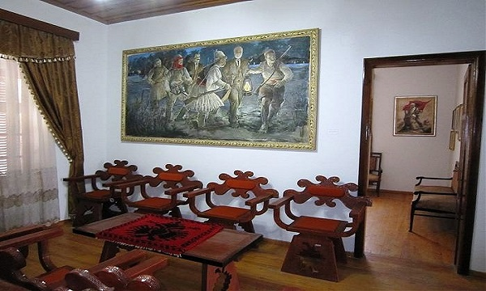
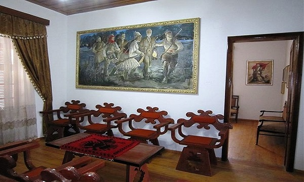La « ville des Oranges et Olives » est une ville côtière dans le sud de l’Albanie. C’est la deuxième plus grande ville portuaire d’Albanie, après Durrës. C’est là que la déclaration de l’indépendance des Albanais a été proclamée le 28 novembre 1912. Vlorë fut brièvement la capitale de l’Albanie. Aujourd’hui elle demeure un important centre commercial et maritime pour la pêche et le secteur industriel. La région produit du pétrole, du gaz naturel, du bitume et du sel. La ville est également le lieu d’importantes installations de la marine albanaise.
Le Fort de Porto Palermo
 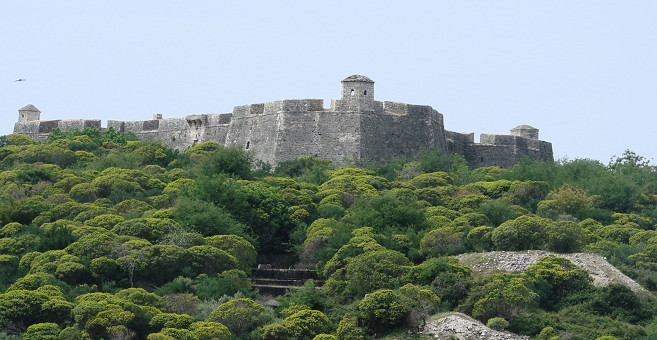
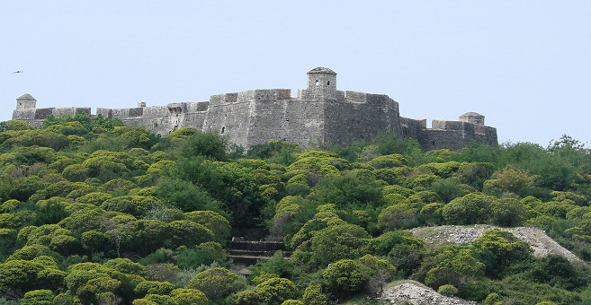

Le Fort de Porto Palermo - se situe près de la magnifique région de Himarë dans le sud de l’Albanie. Le Fort est situé dans la baie de Porto Palermo. L’Huffington Post à classé Porto Palermo au premier rang parmi les 15 destinations européennes jamais découvertes avant 2014. Il a été construit par Ali Pacha en 1804. Le Fort a une forme triangulaire avec trois puissantes tours pentagonales aux coins. Pendant la seconde guerre mondiale, le Fort a servi de prison.
Saranda
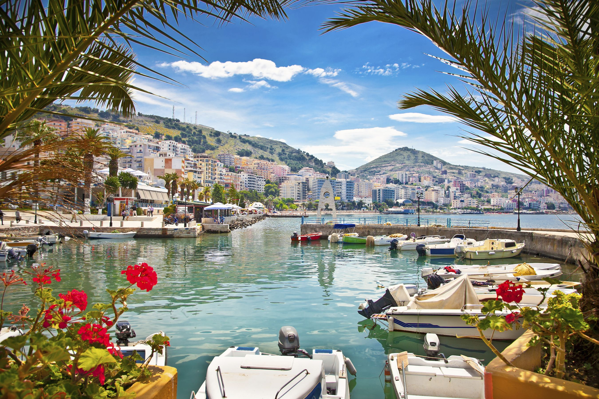


Saranda - est l’une des plus importantes attractions touristiques de la Riviera albanaise. Elle est située sur un golfe de la mer Ionienne en Méditerranée centrale, juste en face vous avez l’extrémité nord de l’île grecque de Corfou. La population totale est de 20000 habitants. Dans l’antiquité, la ville était connue sous le nom illyrien de Onchesmos ou Anchiasmos et était habitée par la tribu illyrienne de la Chaonians. Elle fut occupée deux fois par la Grèce en 1913 et 1914 à 1916. Au cours de la seconde occupation pendant la seconde guerre mondiale, Benito Mussolini a changé le nom de Porto Edda, en l’honneur de sa fille aînée. Le tourisme est la principale ressource économique, mais aussi la pêche et la construction.
Butrint
 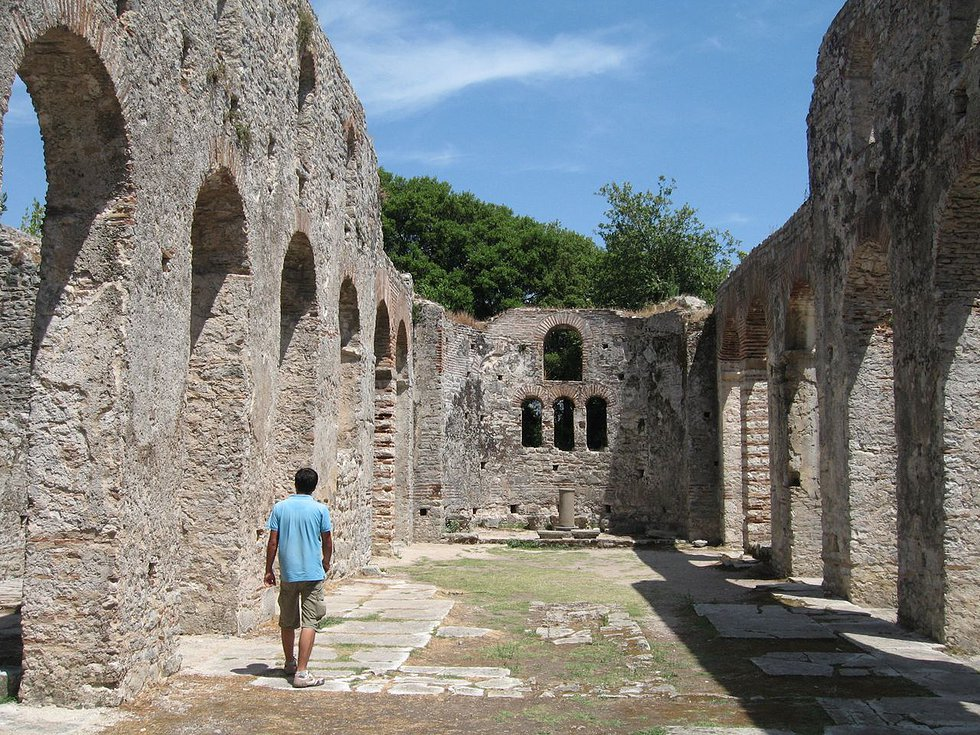
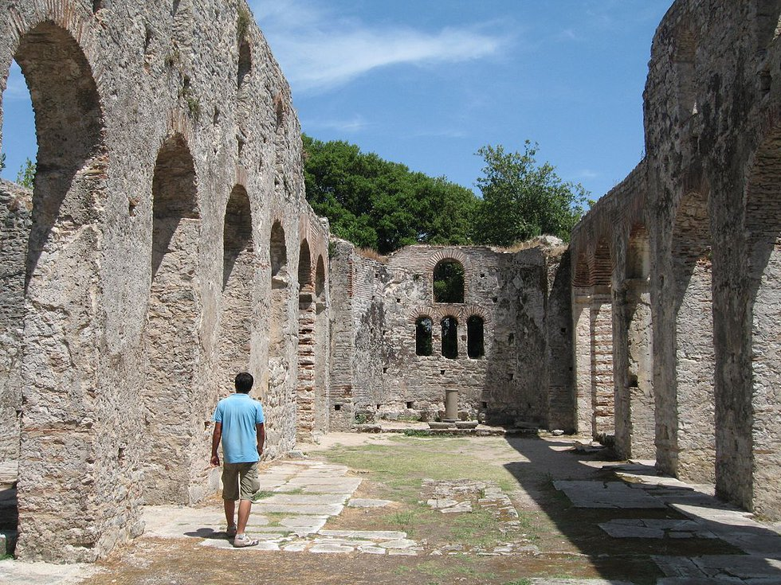

Patrimoine mondial de l’UNESCO, Butrinti est l’un des sites archéologiques le plus important dans le pays contenant différents objets et structures qui datent de l’âge du Bronze jusqu’au XIXe siècle. Il existe encore un certain nombre de monuments majeurs y compris les murs de la ville, fin-antique baptistère, grande basilique, théâtre et châteaux vénitiens. La région est un microcosme de l’histoire méditerranéenne, avec occupation datant de 50 000 av. J.-C., à ses premières traces, jusqu’au XIXe siècle après JC. En plus des vestiges archéologiques, le site est vêtu de forêts naturelles. C’est cette combinaison de monuments historiques et de l’environnement naturel qui fait de Butrinti un endroit unique, un « paysage avec monuments » comme aimée des Grands Touristes 18e et 19e siècles.
Ksamil

 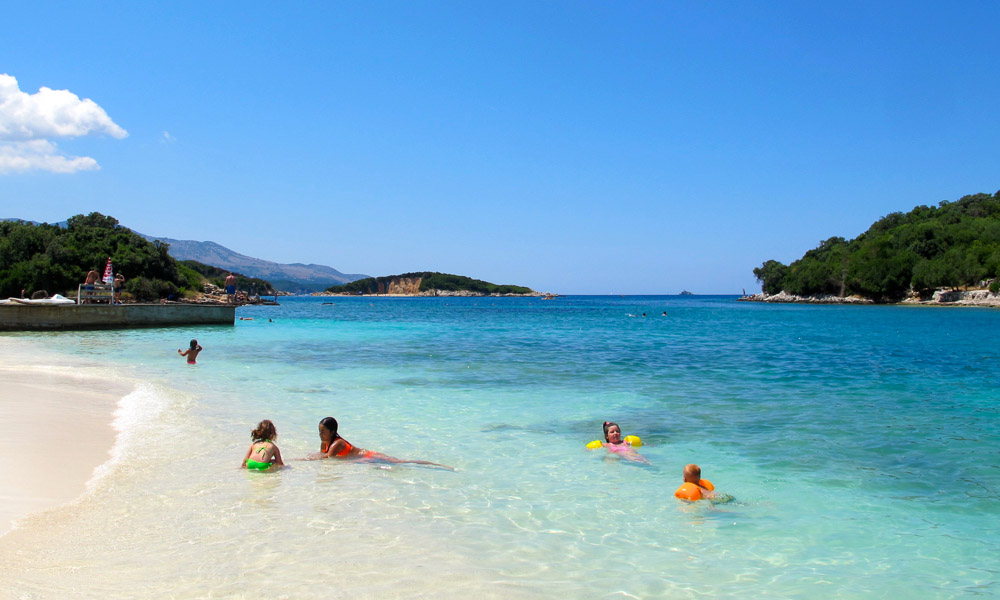
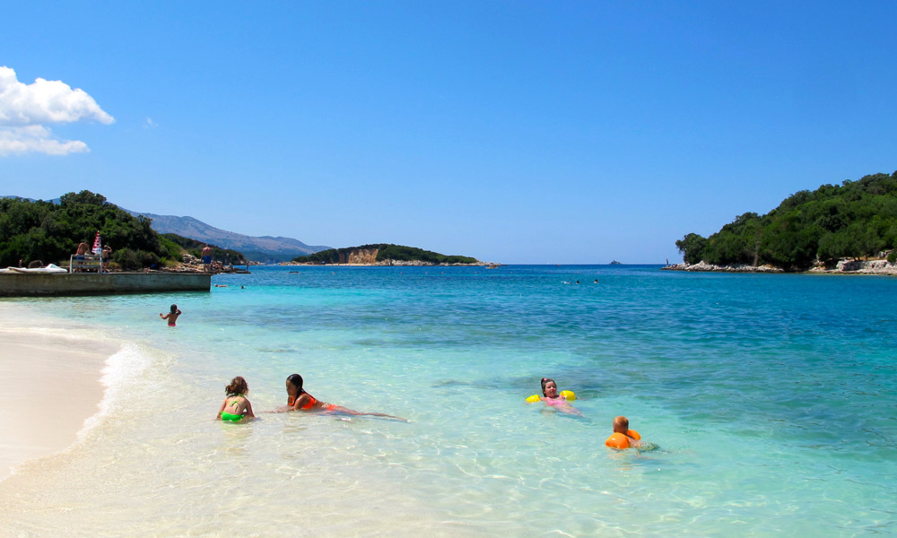Ksamil est l’une des régions balnéaires la plus fréquentées par les touristes nationaux et étrangers. Ksamil Beach et la côte ionienne de l’Albanie a été incluse dans les 20 plus belles plages de vacances en 2013. Les principales attractions sont les îles voisines de Ksamil. Il y a quatre petites îles où deux d'entre elles sont accessibles également à la nage. Les plages sont petites mais très propres. Pendant le communisme, la région est devenue bien connue pour la production d’huile d’olive, citrons et mandarines.
Syri i Kalter
A voir absolument un phénomène naturel d’une eau d’un bleu clair azur avec des bulles de rivière venant de plus de cinquante mètres de profondeur. Les plongeurs sont descendus à cinquante mètres, mais on ignore encore quelle est la profondeur réelle de l’orifice de karst.
Gjirokastër


Située dans la région historique de l’Epire, Gjirokastër est une vieille ville reprise comme Site du patrimoine mondial et décrit comme « un exemple rare de ville ottomane bien préservée ». Autour de la citadelle ancienne du XIIIe siècle, la ville a des maisons à tourelles, qui sont caractéristiques de la région des Balkans. Gjirokastër contient plusieurs exemples remarquables des maisons de ce type, qui datent du XVIIe siècle, mais aussi des plus élaborés exemples datant du début du XIXe siècle. De nombreuses maisons à Gjirokastër ont un style local qui lui a valu le surnom de « Ville de Pierre », car la plupart des vieilles maisons ont des toits recouverts de pierres taillées plates. Gjirokastër est la maison des Albanais iso-polyphonique. Ce phénomène folklorique a été proclamée par l’UNESCO, un « chef-d'œuvre de the Oral et patrimoine immatériel ». Gjirokastër est une ville magique de nombreuses légendes, étonnante architecture ottomane et elle est perché sur une montagne avec une vue magnifique et stratégique historiquement.
Tirana
 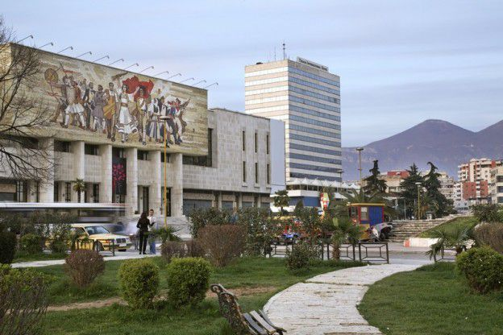
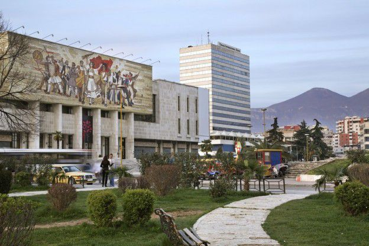

Tirana est devenue la capitale de l’Albanie en 1923, le premier plan d’urbanisme réglementaire a été conçu par des architectes autrichiens. Le centre de Tirana a été le projet de Florestano Di Fausto et Armando Brasini, architectes bien connus de la période de Benito Mussolini en Italie. Mère Teresa est devenue la première personnalité religieuse à visiter le pays en 1988. Les Albanais ont longtemps pris une position antireligieuse et beaucoup sont athée. Commençant au campus et jusqu'à la place Skanderbeg, la ville a vu d’importantes manifestations par des étudiants de l’Université de Tirana, exigeant des libertés politiques dans les années 1990.Visite guidée à Tirana inclut : National History Museum The Clock Tower, The Ethem Bey mosquée, la pyramide, le National Boulevard Martyrs, les bâtiments du gouvernement, la résidence du Président albanais, le square mère Teresa, l’Université Polytechnique. Encore relativement préservé par la mondialisation, vous remarquerez un mélange unique et inspirant des civilisations et des cultures!
Durrës
 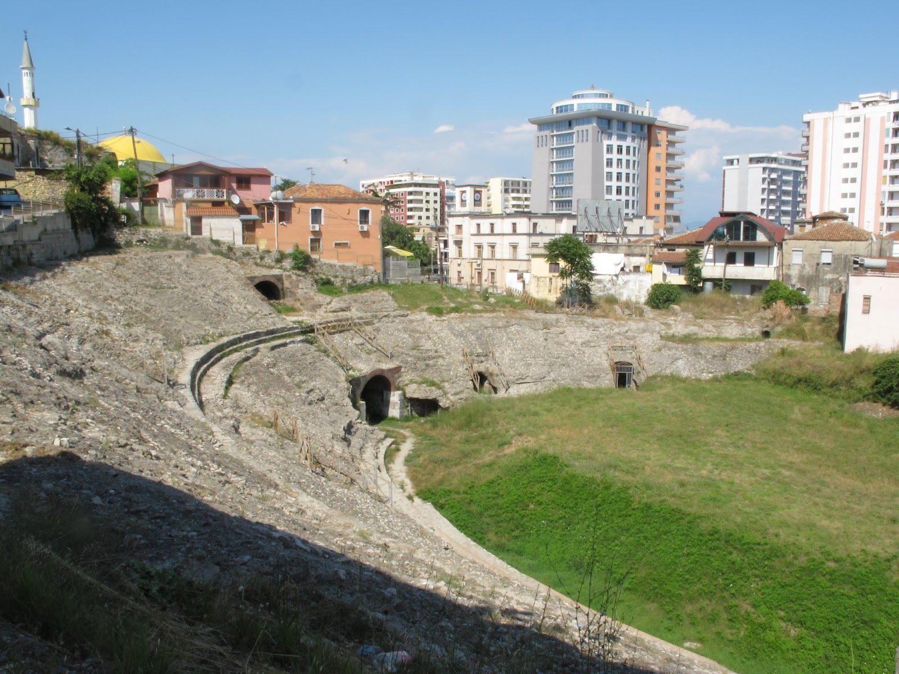
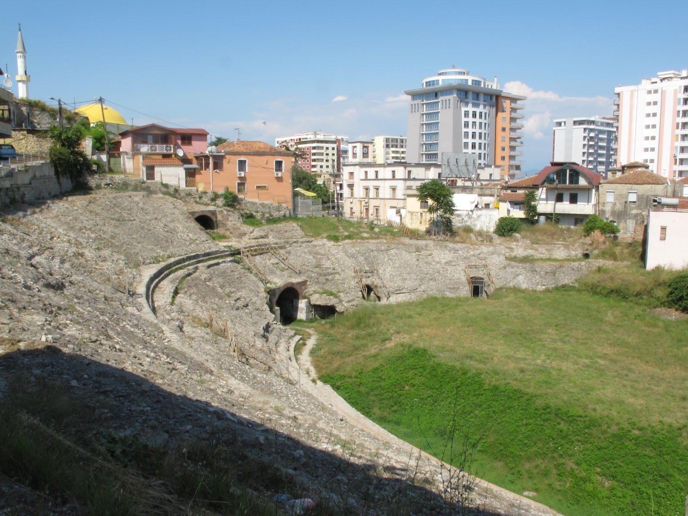

Historiquement aussi connu sous le nom Durazzo et Dyrrachium, Durres est la deuxième plus grande ville d’Albanie, une des villes plus anciennes et importantes sur le plan économique. Durrës est un des points plus étroits de la mer Adriatique. Bien que les vestiges soient minimes, Durres est considéré comme l’une des plus anciennes villes de l’Albanie, la ville fut fondée comme Epidamnos dans l’ancienne région de l’Illyrie en 627 av. J.-C. En dehors d’autres monuments historiques, la ville accueille le mur de la vielle ville de Durrës appelé aussi château de Durrës, tandis que le plus grand amphithéâtre dans les Balkans se trouve à proximité du port. Construit au 2ème siècle après J.-C. règne de Roman Emperor Trajan, l’amphithéâtre est situé dans le centre de la ville et est seulement à moitié déterrée. L’amphithéâtre de Durrës est le plus grand amphithéâtre dans la péninsule balkanique, ayant une capacité de 20 000 personnes.